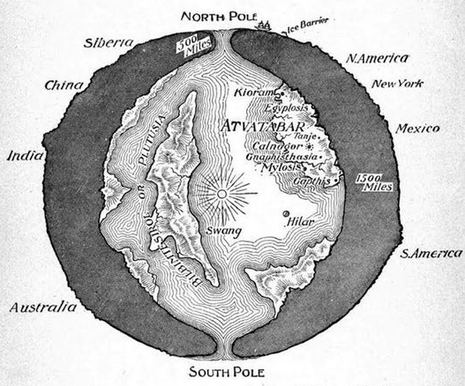

Image Gallery
Diagram from the history channel so you know it's real

Entrance to the Hollow Earth Photographic Proof (Absolutely real not photoshop)


Giants
The skull of Mundus Subterraneus from inside the hollow earth

An illustration of a hollow earth dwelling giant

The Gloperjocker
The Gloperjocker escaped from the hollow earth. The French call it "Le Gloperjockiere". Until recently lurked beneath the Bridge of Dee. We can no longer locate it.
we can no longer locate it we can no longer locate it we can no longer locate it we can no longer locate it we can no longer locate it we can no longer locate it we can no longer locate it we can no longer locate it we can no longer locate it we can no longer locate it we can no longer locate it we can no longer locate it we can no longer locate it we can no longer locate it we can no longer locate it we can no longer locate it we can no longer locate it we can no longer locate it we can no longer locate it we can no longer locate it we can no longer locate it we can no longer locate it we can no longer locate it we can no longer locate it we can no longer locate it we can no longer locate it we can no longer locate it we can no longer locate it we can no longer locate it
Theorised Map of the Hollow Earth
Plain Map

Heightmap shows correlation to the top surface

Currently outdated diagram from William R. Bradshaw's 1892 science-f̶i̶c̶t̶i̶o̶n̶ novel
The onion earth hypothesis